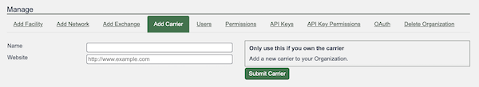

HOWTO: Get Started with PeeringDB as a Carrier Operator
About PeeringDB
PeeringDB, as the name suggests, was set up to facilitate peering between networks and peering coordinators. In recent years, the vision of PeeringDB has developed to keep up with the speed and diverse manner in which the Internet is growing. The database is no longer just for peering and peering related information. It now includes all types of interconnection data for networks, clouds, services, and enterprise, as well as interconnection facilities that are developing at the edge of the Internet.
We believe in, and rely on the community to grow and improve the PeeringDB database. The volunteers who run the database are passionate about security, privacy, integrity, and validation of the data in the database. Even though PeeringDB is a freely available and public tool, users strictly adhere to the acceptable use policy, which prevents the database from being used for commercial purposes and discourages unsolicited communications. This is largely policed by the community and has been very effective since PeeringDB was launched.
Why?
PeeringDB is the interconnection database. Registering information about your carrier in PeeringDB makes it visible to IXPs and network operators who want to use your services to bring in peer or connect to other parts of their own network.
Getting started
Routine use of PeeringDB can be automated using our API but this document is intended to help new carrier administrators get started. Carriers are set up using the web interface. Once this is done you can use the API to automate things that change regularly. This document focuses on the key steps for establishing your presence in PeeringDB and assumes you are using the web interface, which is available in 14 languages.
If you need additional help getting started, please contact us at: support@peeringdb.com.
What is a Carrier?
The carrier object is used to describe providers offering L1 or L2 services in a facility. It is different from a net because that describes services provided at L3 and is linked to its autonomous system number.
Information required
You will need to create several database records, known as objects, to establish your presence in PeeringDB.
Database objects organize relevant information. Most information is optional but sharing all the relevant information maximizes the benefit you get from listing in PeeringDB.
You can create your entry with the minimum required data and add and update the information you share over time. To maximize the value of your entry in PeeringDB you’ll probably want to include more than the minimum required information. Your company name is required. This information is not required but is useful:
- AKA - If your carrier has an alternative name you can show it here to improve visibility in searches
- Long name - If your carrier has a long name, you can show it here to improve visibility in searches
- Notes - this field, which supports Markdown, can be used to describe the characteristics of your carrier that would be most useful to PeeringDB users
You can look at the information shared by other PeeringDB users to work out what your organization should be sharing.
Database records to create
User
The org is the parent for the carrier but you will need to start the process by creating a user account. If you use a role account for a PeeringDB user you should update the password when people who had access to the role account leave your organization. If you use a ticketing system, please make sure it does not auto-respond in a way that generates a slew of new tickets.
Org
The org object is your organization’s core record in PeeringDB. All it needs is an organization name but you can add extra value by including information about where your organization is located. You could specify as little as a country name or as much as a full postal address.
Your org object will be assigned a numeric identifier, called its id. This is what will be referenced by any child carrier object.

Carrier
Once you have created your organization you may add the carrier object. You do this by using the Add Carrier tab in the “Manage” menu below your organization.

You then click the edit button in the top right of the carrier screen and indicate which facilities your carrier has a presence in. The manager of the facility needs to approve the association.

Next steps
This short document describes the first steps for getting set up in PeeringDB. Once you have established your presence you should consider sharing information that would be helpful to potential new participants.
Improving this HOWTO
Please let us know how we could improve this article. Send a mail to the Outreach Committee.